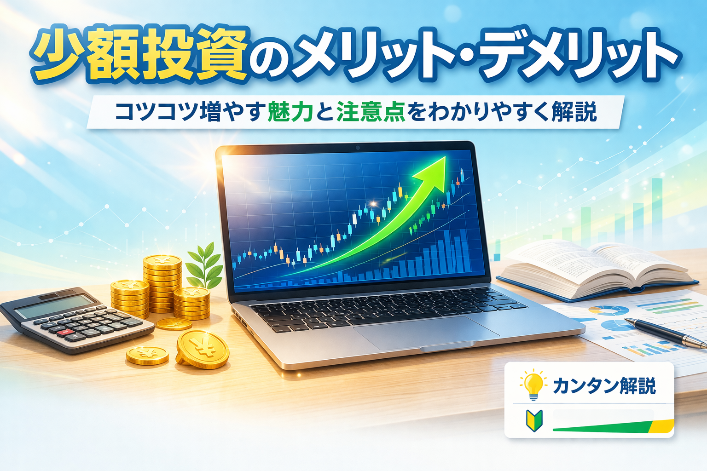

少額投資のメリット・デメリットを初心者向けにやさしく解説
少額投資のメリット・デメリットを最初に整理

- 少額投資は初心者でも始めやすいのが大きなメリットです
- 一方で、短期間で大きな利益は出しにくい傾向があります
- 学びながら経験を積みたい人に向きやすい投資スタイルです
「投資はまとまったお金がないと始められないのでは？」
「少額投資って意味があるの？利益が小さすぎない？」
こうした疑問を持つ初心者の方は多いです。
少額投資は、大きく増やすことを急ぐ方法というより、無理のない範囲で投資に慣れていくための入り口として使いやすい考え方です。
ただし、始めやすい反面、利益の出方や商品選びには知っておきたい注意点もあります。
この記事では、少額投資のメリット・デメリットを初心者向けにやさしく整理し、どんな人に向いているかまでわかりやすく解説します。
まず押さえたいポイント
少額投資は「儲けが小さいから意味がない」と決めつけるものではありません。
投資の仕組みや値動きに慣れながら、無理なく続けやすいことが大きな価値です。
少額投資の主なメリット
- まとまった資金がなくても始めやすいです
- 大きな損失を避けやすいです
- 実際に運用しながら投資に慣れやすいです
- 積立投資や長期投資と相性がよいです
少額投資の一番大きな魅力は、始めるハードルが低いことです。
いきなり大きな金額を用意しなくても、少しずつ投資の経験を積むことができます。
また、投入資金が小さいため、値動きがあっても損失額を抑えやすいのもメリットです。
初心者が相場に慣れる段階では、この安心感は大きな意味があります。
少額でも実際に保有してみると、価格の動きやニュースへの反応が自分ごととして見えやすくなります。
机上の勉強だけでは得にくい経験を積みやすい点も魅力です。
少額投資のデメリットと注意点
- 短期間で大きな利益は出しにくいです
- 選べる商品や買い方が限られる場合があります
- 手数料の影響を受けやすいことがあります
- 少額だからといってリスクがゼロになるわけではありません
少額投資の注意点は、利益も小さくなりやすいことです。
そのため、「すぐに大きく増やしたい」という目的とは相性がよくありません。
また、商品や証券会社によっては、少額では買いにくいものや、手数料の影響が目立ちやすいケースもあります。
始めやすさだけでなく、どの商品をどう買うかも確認したいポイントです。
さらに、少額投資でも価格が下がれば元本割れは起こり得ます。
「少額だから安全」と考えるのではなく、損失額を抑えやすいだけで、リスクが消えるわけではないと理解しておくことが大切です。
少額投資が向いている人・向いていない人
- 投資を試しながら学びたい初心者に向いています
- 無理のない範囲で長く続けたい人と相性がよいです
- 短期間で大きな利益を求める人には向きにくいです
- 値動きに慣れる練習として使いたい人にも向いています
少額投資は、投資経験が少なく、まずは基本を知りたいという方に向いています。
最初から大きなお金を動かす不安を抑えながら、実際の値動きに触れられるからです。
また、毎月少しずつ積み立てながら長期で資産形成を考えたい方にとっても、少額投資は取り入れやすい方法です。
続けやすさを重視する人には相性がよいです。
一方で、短期間で大きく増やしたい人や、すぐに大きな成果を期待する人には物足りなく感じられるかもしれません。
少額投資は、スピードよりも継続と経験を重視するスタイルです。
初心者が少額投資を始めるときの考え方
- 生活費に影響しない範囲で始めるのが基本です
- 続けられる金額を意識することが大切です
- 商品の仕組みを確認してから始めると安心です
- 少額でもルールを決めて続けることが重要です
初心者が少額投資を始めるときは、「いくら儲かるか」よりも「無理なく続けられるか」を重視したほうが進めやすいです。
金額が小さくても、続けることで投資への理解は深まっていきます。
また、少額だからこそ気軽に始めやすい反面、商品内容を確認せずに選ばないよう注意したいです。
株式、投資信託、ETFなど、それぞれ特徴が異なるため、自分に合うものを選ぶことが大切です。
少額投資を始める前に意識したいこと
- 毎月続けられる金額を決める
- 生活費と投資資金を分ける
- 仕組みがわかる商品から選ぶ
- 短期で結果を求めすぎない
※少額投資は、投資に慣れるための一歩としても活用しやすい方法です。
少額投資とあわせて読みたい関連記事

少額投資のメリット・デメリットを理解したら、次は投資をいくらから始められるか、積立投資や投資信託の基本もあわせて確認しておくと判断しやすくなります。
以下の関連記事も参考にしてください。

証券口座の比較を見ておきたい方へ

一般ユーザー目線の体験でおすすめの会社をご紹介

よくある質問（FAQ）

-
Q. 少額投資のメリットは何ですか？
始めやすいこと、損失額を抑えやすいこと、実際に運用しながら投資に慣れやすいことが主なメリットです。 -
Q. 少額投資のデメリットは何ですか？
短期間で大きな利益は出しにくく、商品によっては手数料や選べる範囲に注意が必要な場合があります。 -
Q. 少額投資でも意味はありますか？
はい、あります。投資の仕組みや値動きを実際に経験しながら学べるため、初心者にとって大きな一歩になります。 -
Q. 初心者はいくらくらいから始めるべきですか？
一律の正解はありませんが、生活費に影響しない範囲で、無理なく続けられる金額から始める考え方が基本です。 -
Q. 少額投資ならリスクはありませんか？
いいえ、少額でも元本割れの可能性はあります。ただし、投入資金が小さいぶん、損失額を抑えやすいのが特徴です。
ご利用にあたっての注意事項
本記事は情報提供を目的としており、投資の勧誘を目的としたものではありません。株式・ETF・投資信託・外国証券等の取引は元本保証がなく、価格変動等により損失が生じる場合があります。少額投資は始めやすい一方で、利益や損失の出方、手数料の影響なども考慮する必要があります。取引開始前に、契約締結前交付書面や商品説明書、目論見書等を必ずご確認のうえ、ご自身の判断と責任でお取引ください。
最終更新日：2026-03-24